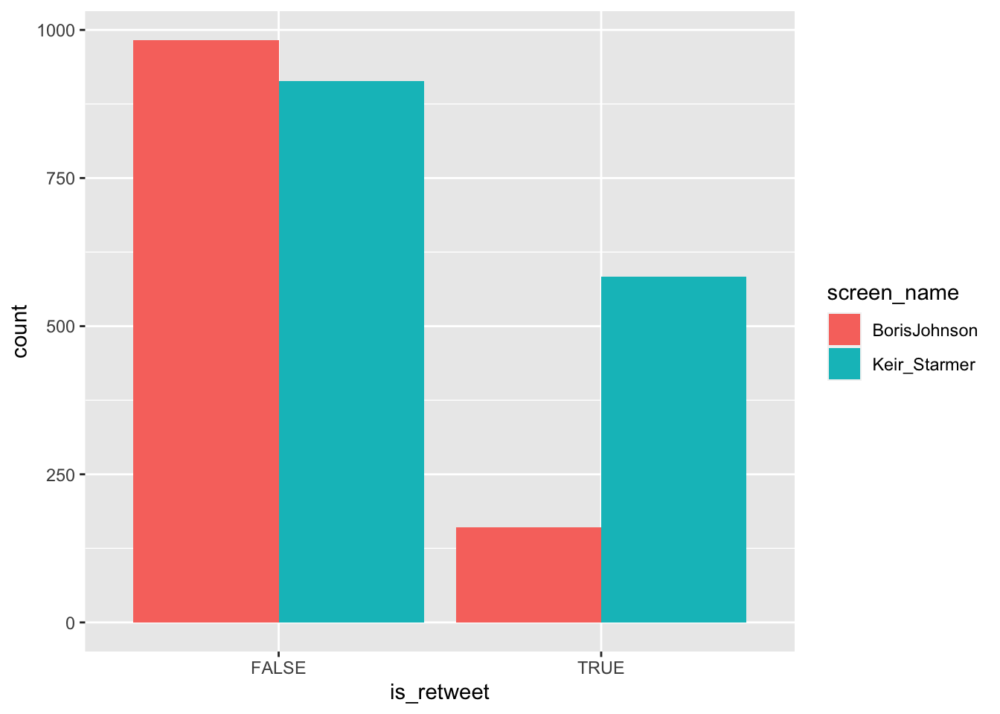

Data Analysis and Visualisation with Twitter Data
Patricia Rossini
2022-06-26
Data Analysis
There are different analytic techniques you can use to study twitter data depending on your research interests. In this workshop, we are only covering a few possibilities to give you an idea of research projects using Twitter data, focusing a bit more on improving the understanding of the possibilities
If you want to keep learning R to analyze Twitter data, you can also explore more automated techniques that we will not to cover here.For instance, you could use textual mining and analysis techniques if you want to find which words are more frequently associated with a particular hashtag. You can also consider network analysis techniques if you want to study relationships between accounts.
There are several online tutorials that will teach you how to implement these techniques on tweets using R. Just use Google :)
Exploring Twitter Datasets
Let’s begin with basic descriptives, as this will help you better understand the data you collected. We collected a dataset that contains tweets from leader accounts for the two main political parties in the UK.
Now that we have a filtered dataset looking at a specific point in time (2021 if you are using the same data as me) We could look into basic descriptive statistics to further compare and analyse these accounts. For instance, let’s look at the means for engagement metrics:
load("leaders270622.RData")
leaders_2021 %>% group_by(screen_name) %>%
summarise_at(vars(c('retweet_count', 'favorite_count')), .funs = c(mean = mean), na.rm=TRUE)Time Series
Time series are useful to understand data patterns over time. This can help you compare how much different accounts tweet over time, or investigate tweets (or engagements) over a period of time. The main point of a time series plot is to show trends over a certain period of time.
For instance, considering the leaders dataset we collected, we can plot the four accounts’ Twitter activity in 2021 to answer basic research questions such as who was more active on Twitter, and when, observing peaks of activity.
leaders_2021 %>%
group_by(screen_name) %>%
rtweet::ts_plot("weeks", trim = 2L) +
geom_abline() +
theme_classic() +
scale_x_datetime(date_labels = "%b %d", breaks = "2 week") +
scale_color_brewer(type = "qual", palette = 2) +
ggplot2::theme(
legend.title = ggplot2::element_blank(),
legend.position = "bottom",
plot.title = ggplot2::element_text(face = "bold")) +
ggplot2::labs(
x = NULL, y = NULL,
title = "@BorisJohnson & @Keir_Starmer on Twitter, 2021",
subtitle = "Aggregated by 2 weeks") + theme(axis.text.x = element_text(angle = 90, vjust = 0.5, hjust=1))You can tweak your plot changing the colors, breaks (hours, days, weeks…), the type of the plot, the theme etc. Check ggplot2 reference to learn more about these options.
Other visualisations
To create our plot, we will use a ‘pipe’ to filter the data and remove the missing values (NAs) before we call ggplot to create the graphics.
# basic plot of retweet vs tweets
leaders_2021 %>%
ggplot(aes(x=is_retweet, fill = screen_name)) +
geom_bar(position = "dodge")
The plot can take several arguments for customization. For instance, we can add some text to it, filter more values, or change the theme.
leaders_2021 %>%
ggplot(aes(x=is_retweet, fill = screen_name)) +
geom_bar(position = "dodge") +
labs(title = "Original Tweets and Retweets", caption = "Tweets from 01/01/2021 - 31/12/2021", x = "Is Retweet?", y = "N", fill = "Account") + theme_minimal()Finally, let’s create a plot using percentages. To do this, we will use pipes again to calculate percentages before creating the plot:
leaders_2021 %>%
group_by(screen_name, is_retweet) %>% # we are using this to make sure the data is grouped to calculate proportions
summarize(n = n()) %>%
mutate(perc = 100*n/sum(n)) ## `summarise()` has grouped output by 'screen_name'. You can override using the `.groups` argument.## # A tibble: 4 × 4
## # Groups: screen_name [2]
## screen_name is_retweet n perc
## <chr> <lgl> <int> <dbl>
## 1 BorisJohnson FALSE 983 86.0
## 2 BorisJohnson TRUE 160 14.0
## 3 Keir_Starmer FALSE 914 61.1
## 4 Keir_Starmer TRUE 583 38.9# If you want to keep this table as a separate object, just assign it to an object (percentages_tab is an arbitrary name I picked):
percentages <- leaders_2021 %>%
group_by(screen_name, is_retweet) %>% # we are using this to make sure the data is grouped to calculate proportions
summarize(n = n()) %>%
mutate(perc = 100*n/sum(n)) ## `summarise()` has grouped output by 'screen_name'. You can override using the `.groups` argument.Now that we learned how to calculate percentages using two variables, let’s incorporate them in the plot with another pipe:
leaders_2021 %>%
group_by(screen_name, is_retweet) %>%
summarize(n = n()) %>%
mutate(perc = 100*n/sum(n)) %>%
ggplot(aes(x= is_retweet, fill = screen_name, y = perc)) +
geom_bar(position = "dodge",stat = "identity") + #we changed stat to identity because we
theme_minimal() +
labs(title = "Proportion of original Tweets and Retweets", caption = "Tweets from 01/01/2021 - 31/12/2021", x = "Is Retweet?", y = "%", fill = "Account") + theme_minimal() +
ylim(c(0, 100)) # this determines the limits of the y axis. 
And done :)
You can save/export the figures you created using the following code (or by clicking ‘export’ in the plots pane in RStudio):
ggsave(
filename,
plot = last_plot(), dpi = 300)Hashtag Analysis
# first, let's use DPLYR's select function to create a new dataframe with only a few selected columns.
#
leaders_hash <- select(leaders_2021, screen_name, hashtags, favorite_count, retweet_count)
# because hashtags are sometimes in a list, e.g. c('hasthag1', 'hashtag2'), we need to unnest them. Here we still use group_by because we care about hashtags per account.
## note that this is a more elegant solution to what we did during the workshop. We are changing hashtags to lower case inside the pipe, before we count!
hash <- leaders_hash %>%
group_by(screen_name) %>%
unnest(c(hashtags)) %>%
mutate(hashtags = tolower(hashtags)) %>%
count(hashtags)
# If we want to just take a look at the top 10 hashtags per account, then:
# top10
top10 <- hash %>%
group_by(screen_name) %>%
filter(!is.na(hashtags)) %>% # get rid of the blank value
slice_max(order_by = n, n = 10) # change 10 for any number if you want more!
# Then, we can plot top 10 hashtags with a facet grid
top10 %>% ggplot(aes(x = hashtags, y = n, fill = screen_name)) +
geom_bar(stat = "identity", position = "dodge") + coord_flip() + facet_grid(. ~ screen_name )
# filtering by words in a hashtag and assigning to a dataset
x <- hash %>% filter(grepl('covid', hashtags))
# you can do the same but with tweets,
# first, lower case
leaders_2021$text <- tolower(leaders_2021$text)
# then search for word in tex
y <- leaders_2021 %>% filter(grepl("london", text))
hash <- leaders_hash %>%
group_by(screen_name) %>%
unnest(c(hashtags)) %>%
mutate(hashtags = tolower(hashtags)) %>%
count(hashtags)
# likes per hashtag
likes <- leaders_hash %>%
group_by(screen_name) %>%
unnest(c(hashtags)) %>%
mutate(hashtags = tolower(hashtags)) %>%
group_by(hashtags, screen_name) %>%
filter(!is.na(hashtags)) %>% # get rid of the blank value
summarise(total_likes = sum(favorite_count)) %>%
ungroup()
# RTs by hashtag
RT <- leaders_hash %>%
group_by(screen_name) %>%
unnest(c(hashtags)) %>%
mutate(hashtags = tolower(hashtags)) %>%
group_by(hashtags, screen_name) %>%
filter(!is.na(hashtags)) %>% # get rid of the blank value
summarise(total_rts = sum(retweet_count)) %>%
ungroup()Extra useful bits of code
Here I’ll leave some extra functions we looked at that could be useful to you:
# recode values in the dataset
freq(leaders_2021$retweet_location) # we see lots of inconsistencies in how cities are presented. We can rename them to normalize
leaders_2021$retweet_location[leaders_2021$retweet_location == "Leeds, England"] <- "Leeds"
leaders_2021$retweet_location[leaders_2021$retweet_location == "London, England"] <- "London"
leaders_2021$retweet_location[leaders_2021$retweet_location == "Manchester, UK"] <- "Manchester"
# for two variables, we can use if else statements
# to create new variables based on conditions
leaders_2021$Party <- "Labour" # first we initialize the column with one value
# then the ifelse statement will replace values based on conditions:
leaders_2021$Party <- ifelse(leaders_2021$screen_name == "BorisJohnson", "Tory", "Labour")
# create new variables based on conditions ####
leaders_2021$popular_tweets <- "viral"
leaders_2021$popular_tweets[leaders_2021$favorite_count > 500 & leaders_2021$favorite_count < 1000] <- 'popular'
leaders_2021$popular_tweets[leaders_2021$favorite_count <= 500] <- 'less popular'
freq(leaders_2021$popular_tweets)
# subset data based on conditions
unpopular <- subset(leaders_2021, favorite_count <= 500) # select tweets with fewer than 500 likes
hashtag <- subset(leaders_2021, !is.na(hashtags)) # removes tweets without hashtagsDon’t forget!
There are many other things you could do, such as getting a list of followers and followed accounts by a specific account. This workshop only focused on getting tweets based on accounts and hashtags as these are the most likely use-cases for your own dissertations, but you can find many more use cases by looking at the documentation for RTweet